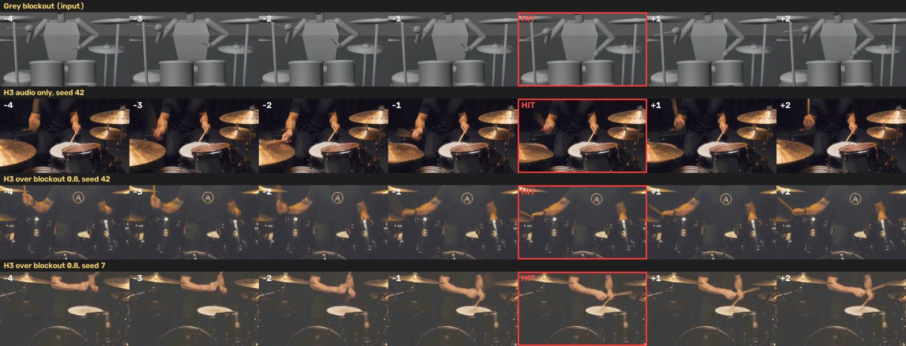
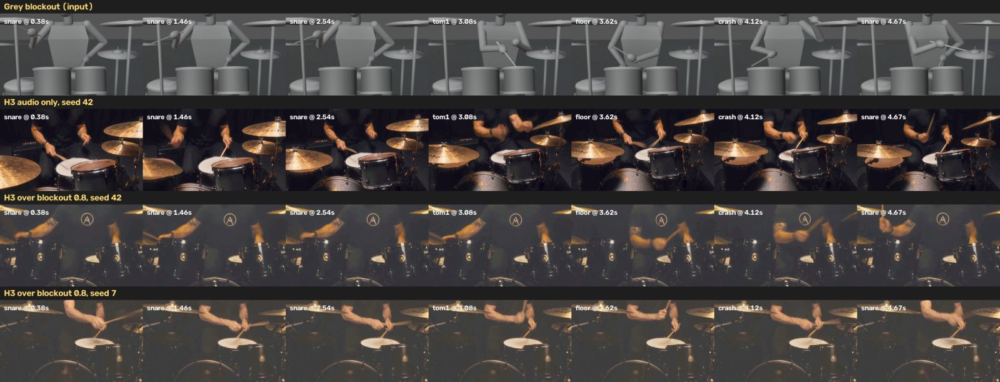

Demo
H3 renders are labelled H3. Blender renders are labelled Blender.The C19 take, Rachmaninoff opening: one 362-frame H3 clip from a locked-off overhead camera fitted to the hands. The blockout is rendered at 4x frame density (three in-between poses after every frame) and every 4th H3 frame is kept, so each H3 latent frame covers one frame of the take. Lock check: in the median frame 88% of our reference edges have an H3 edge within the scale-matched tolerance (85% in the 10th-percentile frame, 76% in the worst, the first); a Blender render of the same geometry scores 97%. Switch the view to see Blender | H3 | the lock overlay. Sound: what these hands play on the working piano.
Skeleton, monster, robot, kitty-cat paw and real hands, switching every 1.7 s. Under every look is the same Blender blockout motion; H3 paints each look from the control's geometry and the prompt.
Left: the Blender grey plate with the look's geometry (H3's video stream, at video_strength 0.88). Middle: the ControlNet input, Canny edges of Blender's normal pass. Right: the H3 render.
Five H3 renders and, bottom right, the Blender grey plate they all follow.
Same recipe on a second shot of the same take.
A 25 s excerpt of the whole-suite performance, rendered in Blender. The hands are MPFB2 rigged hands solved from the notes. The sound is what those hands play on the simulated piano action, not the MIDI file. This is the motion H3 paints over.


One snare backbeat, frame by frame, and the frame at each big hit. Top row: the grey drum blockout. Over the blockout, the stick comes down on the hit. From the audio alone, the stick is mid-stroke at the hit.
How it works
notes → motion → Blender passes → edges → H3 → lock check- Notes to motion
The piano solver picks a fingering and moves rigged MPFB2 hands so each finger reaches its key on the note. The drum solver does the same for a drummer from drum onsets or a GM drum MIDI.blockout/piano.py · blockout/drums.py
- Judge on a working piano
The animated hands play a simulated grand action: weighted keys, a hammer with let-off, dampers and pedal. A key sounds only when a finger really presses it, so the audio is what the hands play.blockout/action.py
- Render the reference
Blender renders three passes of the same motion: a grey plate with the look's geometry, a normal pass, and a hand mask. For the piano clip it renders at 4x frame density, with three in-between poses after every frame.blockout/blender_piano.py · blender_drums.py · h3_tools/densify_take.py
- Edges from the normal pass
Canny 20/60 after a 3 px blur. The normal pass has an edge at every finger and joint. A grey beauty pass has almost none on the fingers.Blockout Reference Edges
- H3 paints the look
fl2va mode B: the grey plate in the video stream at video_strength 0.88, H3 Fun ControlNet Union 2.0 at strength 1.0 on the edges, and the stem frozen in H3's audio stream. The prompt names the look.H3 Band Zone Latent · h3band/h3_run.py → /prompt
- Measure the lock
For each reference edge inside the hand mask, is there an H3 edge within 3 px (scaled with the camera's zoom)? The node also writes an overlay with the reference edges in red over the render.Blockout Lock Check
Results
measured, not estimated| Measure | Realistic judge | Strict judge |
|---|---|---|
| Written notes that sound | 95.0% | 94.6% |
| Wrong keys sounded | 398 | 652 |
Realistic judge: keys with 0.2 kg action mass. Strict judge: weightless keys, so any brush of a finger sounds. Timing: 90% within 35 ms. 22 notes are unplayable as transcribed.
| Render | Edges matched |
|---|---|
| Blender grey plate (the ceiling) | 97% |
| H3 skeleton hands, 24 fps clips | 78–86% |
| H3 skeleton, close camera, 24 fps | 80% |
| H3 skeleton, close camera, 4x frame density | 88% |
Median frame: the share of the reference geometry's edges with an H3 edge within 3 px at the wide camera, 4.35 px at the close camera (the same distance on the keys), inside the hand mask. Arms and wrists lock. At 24 fps fast fingers ghost, because one H3 latent frame spans 4 video frames and a strike can fall inside one. Rendering at 4x frame density gives each frame of the take its own latent frame and removes most of the ghosts, for 4x the H3 time.
Drums: from the audio alone, H3 paints a drummer whose sticks don't follow the hits. Over the drum blockout the sticks keep the blockout's timing. The README has stepupgaming's stick-sync table.
Nodes
category: Band Aid, h3band| Node | Inputs | Outputs | Needs |
|---|---|---|---|
| Blockout Reference EdgesBandAidBlockoutReferenceEdges | normal_pass IMAGEmask MASK (optional) | control IMAGE | opencv-python |
| Blockout Lock CheckBandAidBlockoutLockCheck | render IMAGEnormal_pass IMAGEmask MASK | lock_recall FLOATlock_precision FLOATreport STRINGoverlay IMAGE | opencv-python |
| H3 Band Zone LatentH3BandZoneLatent | latent LATENTaudio_vae VAEaudio AUDIOvideo_latent LATENT (optional) | LATENT | ComfyUI with MiniMax H3 |
| H3 Band Drum EventsH3BandDrumEvents | audio AUDIO | DRUM_HITS | soundfile, scipy |
| H3 Band Drum Hits (MIDI)H3BandDrumHitsMIDI | a GM drum .mid in the input folder |
DRUM_HITS | |
| H3 Band Drum BlockoutH3BandDrumBlockout | hits DRUM_HITS | IMAGE | Blender |
Each node module loads on its own. A ComfyUI without MiniMax H3 still gets the lock and drum nodes.
Install and run
ComfyUI custom node · Comfy API · Comfy SDKInstall into ComfyUI
The nodes import the repo's blockout/ and h3band/ code, so the whole repo is the node package.
# in ComfyUI/custom_nodes git clone https://github.com/newjordan/h3_band_TFCV band-aid # in ComfyUI's Python environment pip install -r band-aid/requirements.txt # Blender for the blockout renders (default: blender on PATH) export H3B_BLENDER=/path/to/blender
H3 renders need a ComfyUI with MiniMax H3 and the H3 models from Comfy-Org/MiniMax-H3: minimax_h3_fl2va_pruned_nvfp4 and the Fun ControlNet Union 2.0 model patch.
Queue the lock graph through the Comfy API
h3band/h3_run.py builds the API-format graph from a small job file and posts it to /prompt. The plate, control and audio paths are relative to ComfyUI's input folder.
export H3B_COMFY_URL=http://127.0.0.1:8188 python h3band/h3_run.py examples/workflows/band_aid_skeleton_job.json --dump # print the graph python h3band/h3_run.py examples/workflows/band_aid_skeleton_job.json # queue it # or post the exported graph yourself curl -X POST $H3B_COMFY_URL/prompt -H 'Content-Type: application/json' \ -d "{\"prompt\": $(cat examples/workflows/band_aid_h3_lock_api.json)}"
Drive the drum blockout with the Comfy SDK
pip install -r requirements-sdk.txt comfy-api-proxy run --comfyui http://127.0.0.1:8188 --port 8189 & cd h3band python sdk_drum_blockout.py ../examples/drums/rock_groove.mid ../work/groove.mp4 --audio ../work/drums.wav python sdk_drum_h3.py ../work/C.mp4 --midi ../examples/drums/rock_groove.mid --audio ../work/drums.wav --blockout --denoise 0.8
Limitations
what doesn't work yet- At 24 fps fast fingers ghost in H3: a finger is narrower than one 32 px H3 token, and one latent frame spans 4 video frames. 4x frame density fixes most of it, at 4x the H3 time (the 3.8 s clip above is about 90 minutes of H3 on one GB10).
- 22 notes in the suite are unplayable as transcribed.
- The piano blockout renders through the Blender scripts in
blockout/; it is not a ComfyUI node yet. The drum blockout is. - Drums: the timing of the strokes carries over to H3, but not which drum each stroke lands on.
- One H3 clip is up to 362 frames, the top of H3's trained range. Chaining clips from the previous clip's last frame darkens the look by about 10% a link, and clips rendered on their own change the look at the seam, so longer takes should cut where the camera cuts.
- The tightest audio lock needs per-token noise masks on nested AV latents (upstream ComfyUI PR #15375). Without it the Zone Latent falls back to inpaint-style blending.